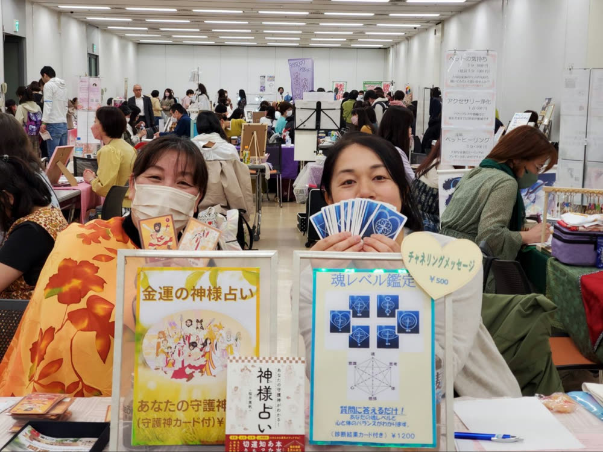

ゼロイチ達成、本当に嬉しかった
新井 恵さん
楽しそうだけど、知らない人がいっぱいのところで自分ができるのか不安だし、何をしたら良いかわからない。一人だとちょっと勇気がないし…無理だなと思っていました。プロフィール、写真、SNSやホームページのリンク、メニュー、動線作り、看板、サービス内容やプレゼントなど、こんなに準備するものがいっぱいなのか、大変だ！と正直思いました。
当日は、その場でお金をいただきゼロイチ達成。本当に嬉しかった。この講座を受講することでマルシェキットがついてくるので、初めての出店でも素敵なブースでお客様の目を引き、お金をいただいてゼロイチ達成もできると思います。出会いの場を広げていきたい方にお勧めです。